YOUNG LEADER • NATIONAL DELEGATE
Viksit Bharat
Young Leaders Dialogue 2026
Representing Chandigarh at one of India’s most prestigious youth policy platforms, where young delegates from across the country came together to share ideas, listen, learn and contribute to the vision of Viksit Bharat @2047.

Snapshot
Prestige, scale and platform
participants appeared for the national quiz stage
selected youth delegates were part of the national Dialogue
Bharat Mandapam, New Delhi
Building a Future-Ready Workforce for Viksit Bharat
Why it mattered to me
A rare national platform
The Viksit Bharat Young Leaders Dialogue was not just another youth event. It was a national platform where young people were brought directly into serious conversations about India’s future.
What made it even more extraordinary was the scale of the process, the quality of the delegates, and the presence of some of the country’s most respected leaders, policymakers, educators and thinkers.
Being selected for it felt deeply meaningful. It was not only an honour. It was also one of those experiences that makes you feel both proud and responsible at the same time.
Selection Process
The journey to Delhi
The road to the national Dialogue was layered, demanding and exciting. It moved through multiple rounds, each one requiring a different kind of thinking, preparation and confidence.
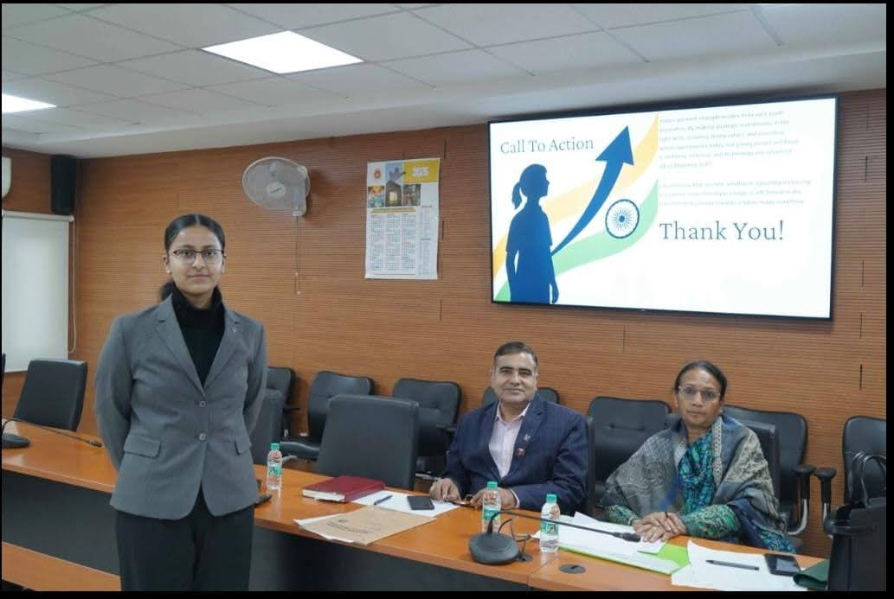
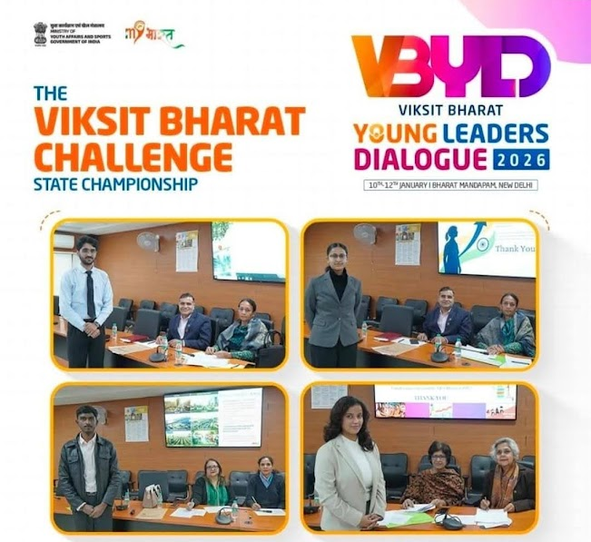
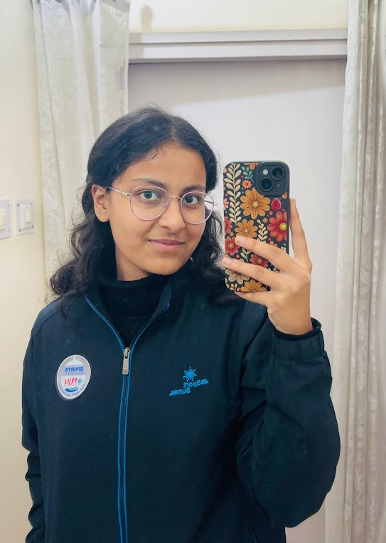
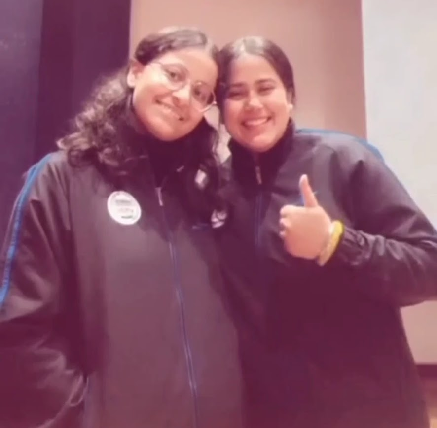
Quiz
The process began with the national Viksit Bharat Quiz, where 50 Lakh+ youth from across India participated.
Essay Round
After qualifying the quiz, I moved to the essay round, where participants had to think more deeply and put forward structured ideas on their chosen theme. I chose "Building a future ready workforce for Viksit Bharat" because it closely aligned with my puruits of Digital Disha and KeyZen.
Presentation Round
I then presented my ideas before a distinguished panel of judges, including Dr. Nemi Chand. Nodal Officer, Chandigarh for Viksit Bharat Young Leader's Dialouge. My theme was Building a Future-Ready Workforce for Viksit Bharat.
Interview
The final stage before selection involved an interview with general knowledge, international affairs, and questions around Viksit Bharat @2047.
National Dialogue
At the end of the process, 30 participants from Chandigarh were selected for the national Dialogue in Delhi.
8 January 2026
Reaching Delhi
We reached Delhi on 8 January, travelling by bus as part of the Chandigarh delegation. The moment we arrived, the seriousness and excitement of the next few days really began to sink in.
We settled in, prepared for the packed schedule ahead, and tried to take in the fact that we were about to be part of one of the country’s most significant youth policy platforms.
My Team
Team Chandigarh
I represented Chandigarh alongside my incredible teammates, Vansh Soin and Sahil Arya. I was the youngest in my team and among the youngest delegates from Chandigarh.
Their constant support, encouragement and energy made the whole experience both productive and memorable. We prepared seriously, pushed each other, and still managed to have some of the most fun and meaningful team moments I have had in years.
I truly had the best time with them. Our teamwork made the journey stronger, more joyful and far more memorable.
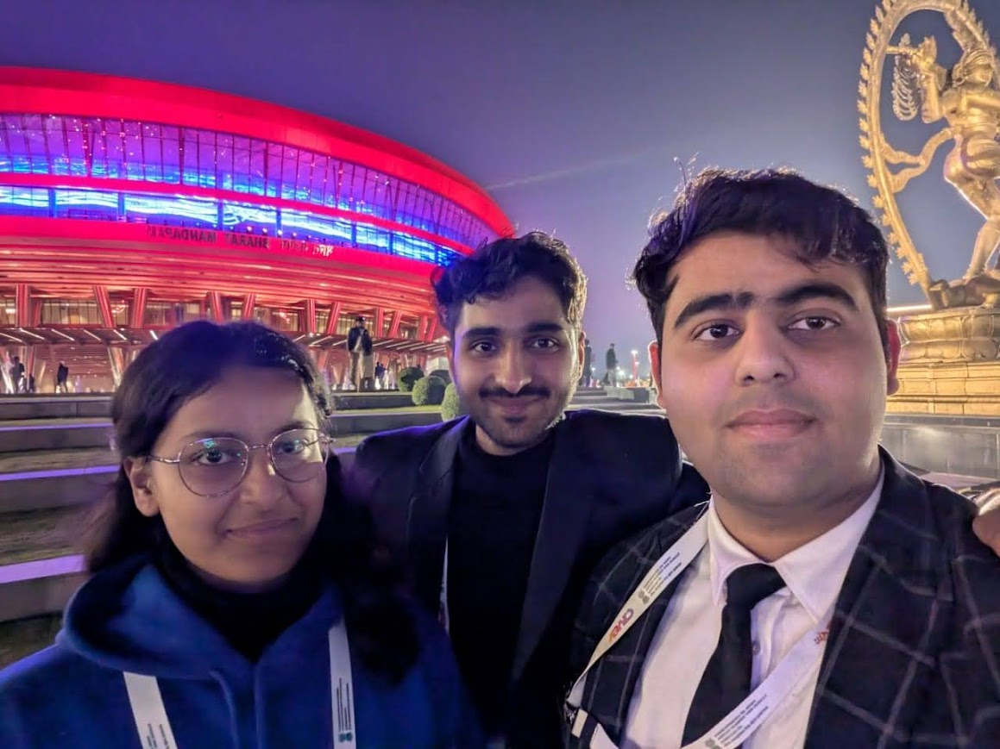
Day 1 • 9 January 2026
Presenting our ideas
The first full day of the Dialogue was one of the most important for us. This was the day we presented our ideas under the theme Building a Future-Ready Workforce for Viksit Bharat.
Our Chandigarh team gave a presentation that we were genuinely proud of. It was ambitious, thoughtful and rooted in ideas we believed could contribute meaningfully to India’s future.
It was presented before a distinguished panel of judges, and the response made us feel that our work had real substance. My team had an outstanding presentation, and several of our ideas were appreciated by the judges as thoughtful and worthy contributions.
Team Chandigarh Presentation
You can view our presentation below.
Later that same day, we explored parts of Bharat Mandapam, taking in the scale, energy and atmosphere of the venue.
In the evening, we had the opportunity to attend a dinner interaction with Shri Manohar Lal Khattar, where we engaged in a focused discussion regarding the current policy frameworks, the developmental trajectory of our states, and the on-ground realities of executing the vision for 2047.
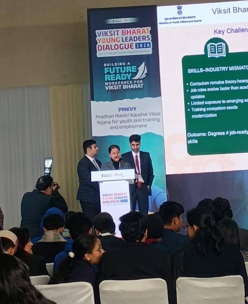
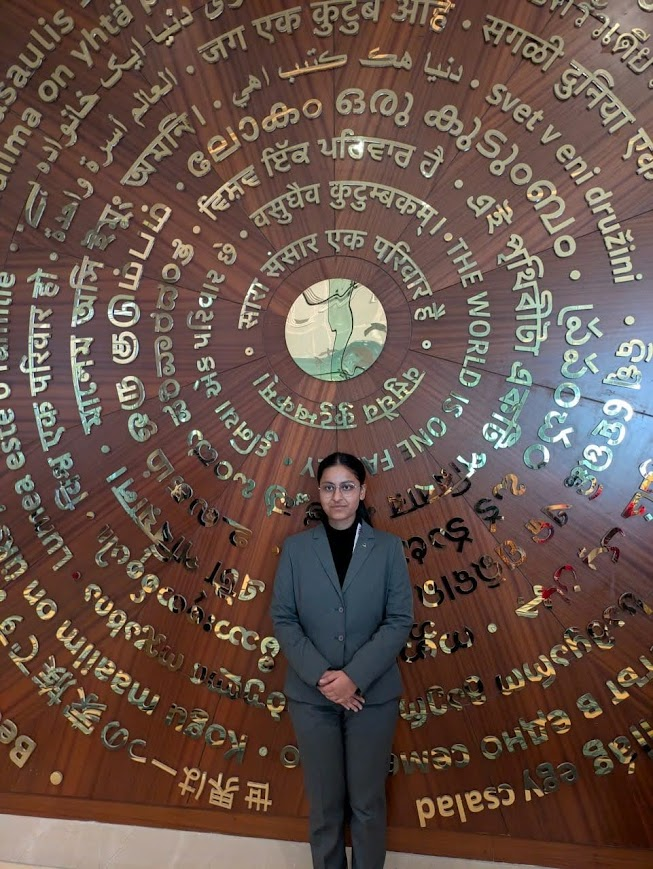
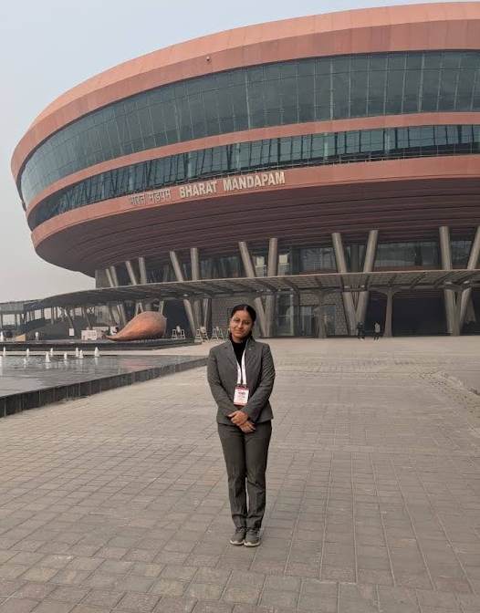
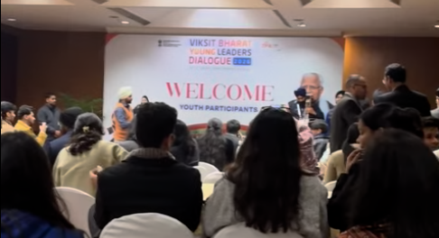
Day 1 was about ideas, presentation, confidence, and the excitement of finally being there.
Day 2 • 10 January 2026
Dialogue, depth and Hall 9
The second day brought even more seriousness and depth to the event. One of the defining moments of the day was listening to National Security Advisor, Ajit Doval, and National Youth Affairs and Sports minister, Dr. Mansukh Manadaviya. Their presence carried immense gravitas and made the national importance of the Dialogue feel even more real.
His address added a wider strategic perspective to the event and reminded all of us that youth leadership must be matched by discipline, clarity and responsibility.
After that, we headed back to Hall 9, where my own theme sessions continued. That was where we attended a panel discussion featuring Anand Kumar, founder of the Super 30 programme, and Aniket Deb, a public policy professional and researcher.
Their ideas on education, reform, skill-building and future readiness added another layer to the experience and pushed us to think more deeply about our own ideas.
Later, we explored more of Bharat Mandapam, including the library and art spaces, and spent more time getting to know delegates from other states.
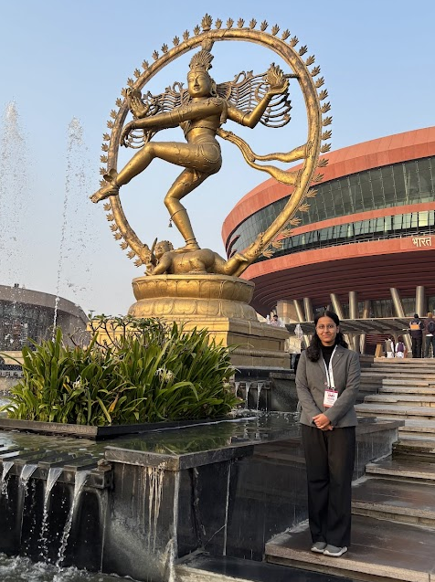
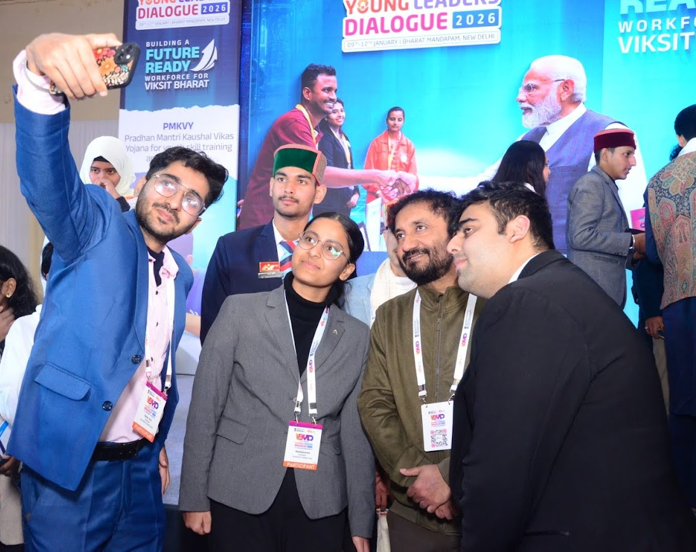
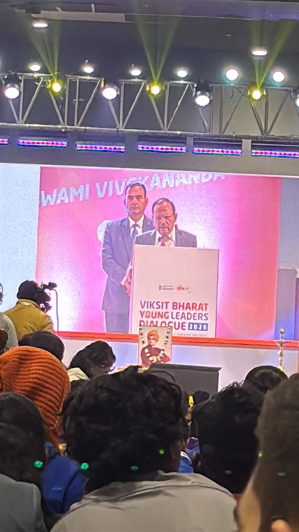
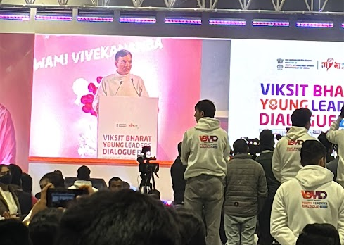
Day 2 brought more depth, serious conversations, and some of the most intellectually rich moments of the Dialogue.
Day 3 • 11 January 2026
Space, culture and Colours of Viksit Bharat
Day 3 was one of the most memorable days of the entire journey. We had the opportunity to listen to Group Captain Shubhanshu Shukla and Group Captain Prasanth Nair, and that session was unforgettable.
Hearing from someone who had just gone to space made everything feel suddenly bigger, closer and more real. One of the most heart-touching moments was when Shubhanshu Shukla reflected on how India looked from space and described that feeling through the words, “Sare Jahan Se Achha.”
Later came Colours of Viksit Bharat, the cultural segment of the experience. We watched dance and singing performances from different states, and every performance brought its own texture, energy and identity into the room.
That part of the Dialogue made me feel more aware of the incredible cultural richness of my own country. It reminded me that India is not just vast in geography or population, but also in memory, tradition, language, expression and lived heritage. Seeing so many states share their spirit in one place made me feel more connected to the country as a whole.
One of my favourite parts of the entire Dialogue was the cafeteria time. That was where the event became even more human. We sang, laughed, danced and interacted with delegates from so many different states. Outside my own state, I connected with people from Maharashtra, Mizoram, Gujarat, Punjab, Delhi and many more. Those moments turned the Dialogue from an important conference into a deeply unforgettable memory.
We also went on an excursion to Gurudwara Bangla Sahib, which added another beautiful layer to the day.
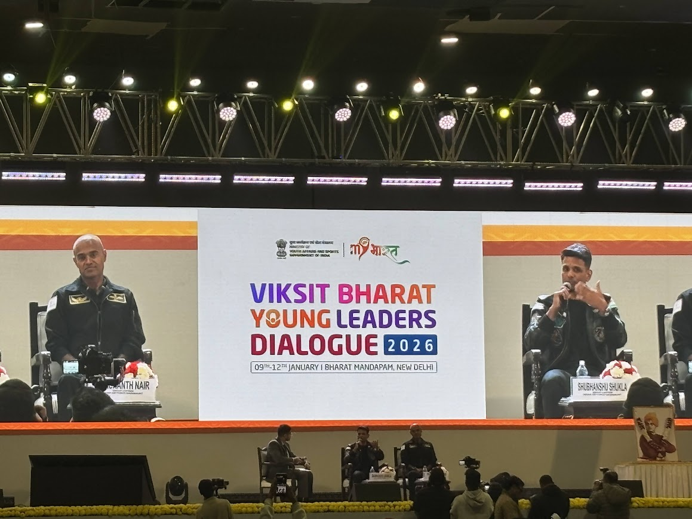
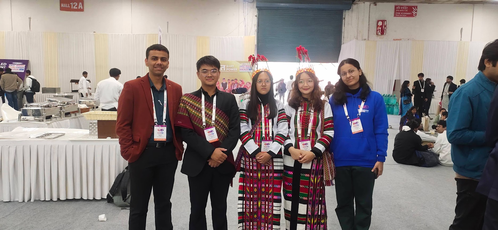
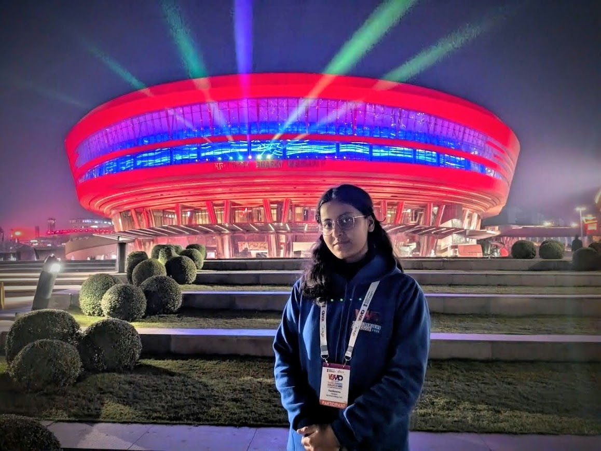
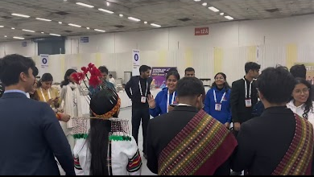
Day 3 was unforgettable — science, culture, friendships, and the feeling of India’s diversity all coming alive in one place.
Day 4 • 12 January 2026
The final day
The final day brought together the full emotional and intellectual weight of the experience. We had the opportunity to listen to major national leaders, including Dr. Mansukh Mandaviya, Raksha Khadse, Dharmendra Pradhan, Piyush Goyal, Bhupender Yadav and others.
Then came the moment all of us had been waiting for: the address by Prime Minister Narendra Modi. It was one of the most electrifying moments of the entire event. His words were energising, encouraging and incredibly motivating. The atmosphere in the room was unforgettable. It genuinely gave us goosebumps.
One of the proudest parts of this journey was seeing ideas from Team Chandigarh reflected in the final set of ideas presented at the highest level. For us, that felt like a very big achievement, and one of the most meaningful validations we could have hoped for.
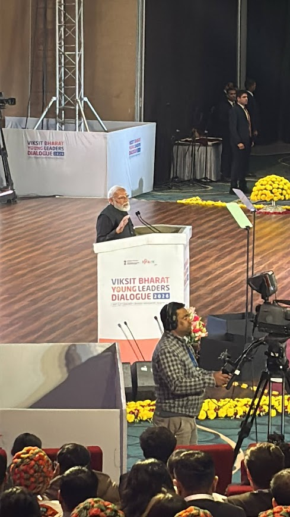
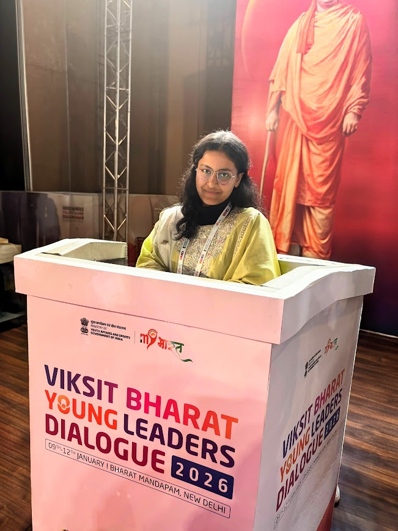
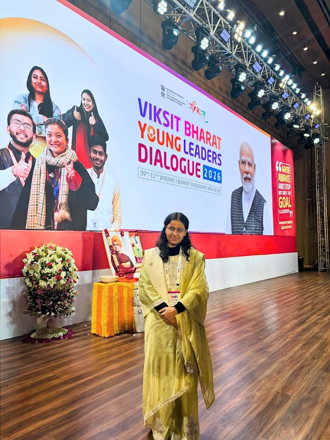
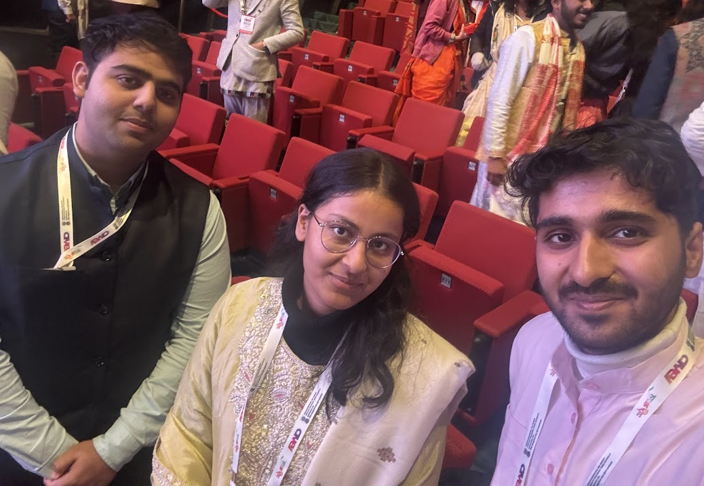
The final day was deeply energising and memorable, bringing together leadership, vision, and the proud closing of an incredible journey.
Friends and Community
An amazing intellectual community
One of the most beautiful parts of this journey was the community it created. Along with my teammates Vansh Soin and Sahil Arya, I met many wonderful people who made this experience even more memorable.
Some of the names I especially remember are Gurleen Kaur, Akhil Duhan, Meghansh, Kashika, Koushal, Satyam, Mannat Jain, Kirti Naidu, Anika Verma, Ojasv Chauhan, Mansi, and many others, including Vedika from Maharashtra, Zoe from Mizoram and Sania from Delhi.
What stayed with me was not just the scale of the event or the presence of dignitaries, but the warmth, intelligence, curiosity and energy of the people around me. I truly loved the overall experience and felt that we had built an amazing intellectual community. ❤️
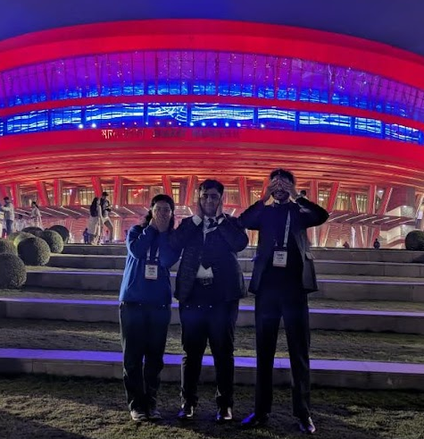
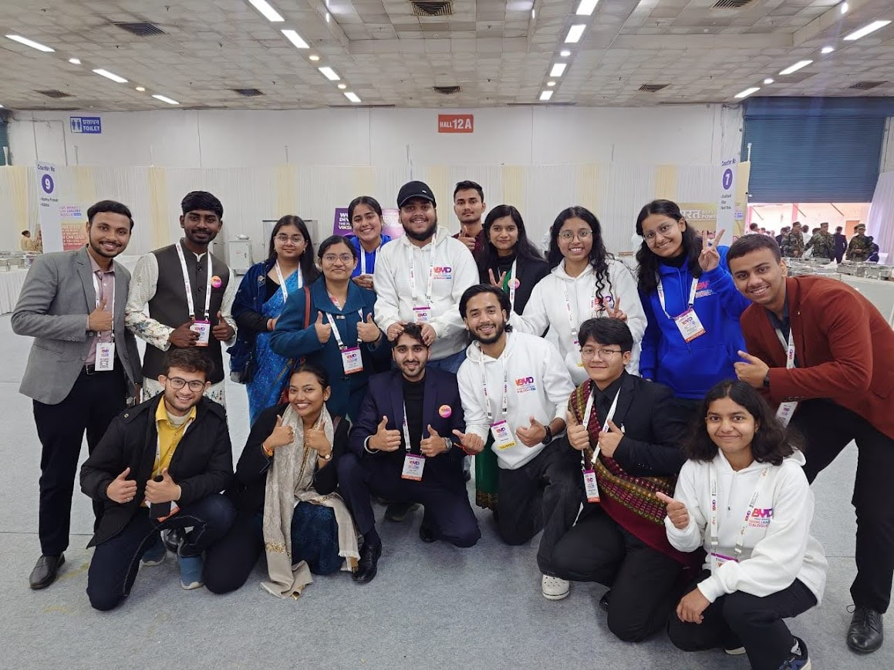
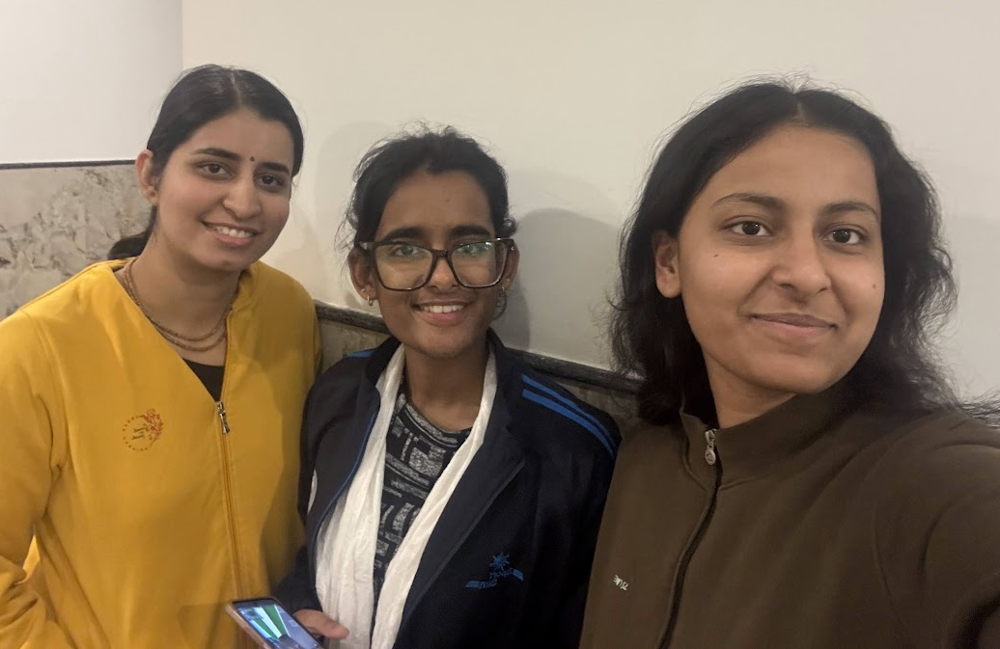
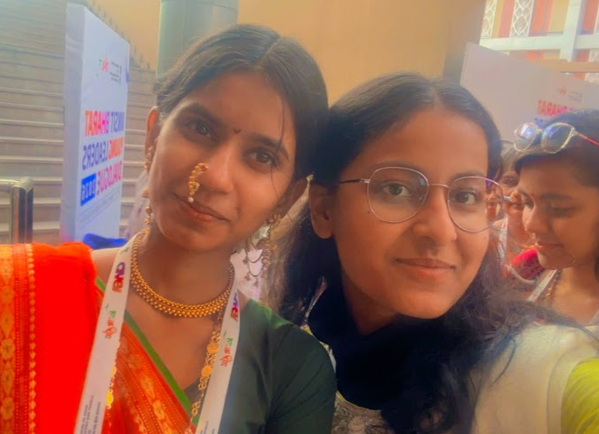
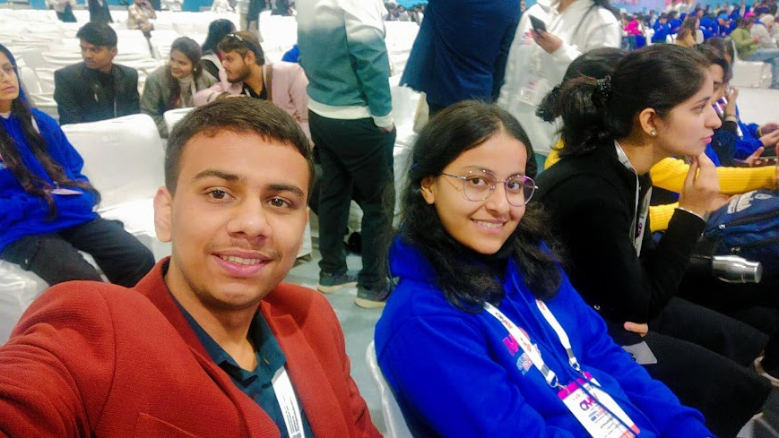
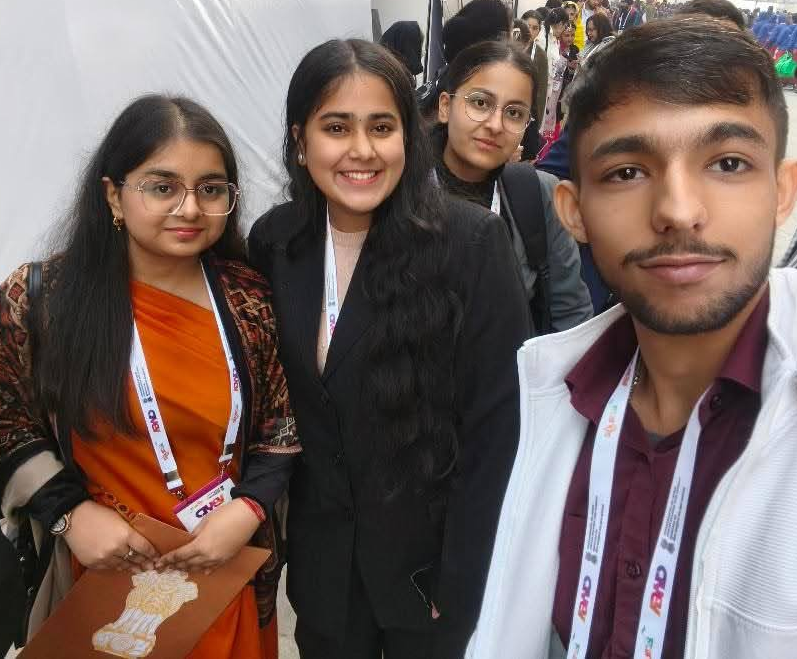
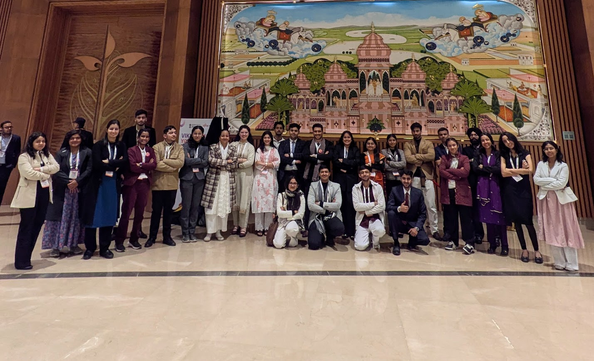
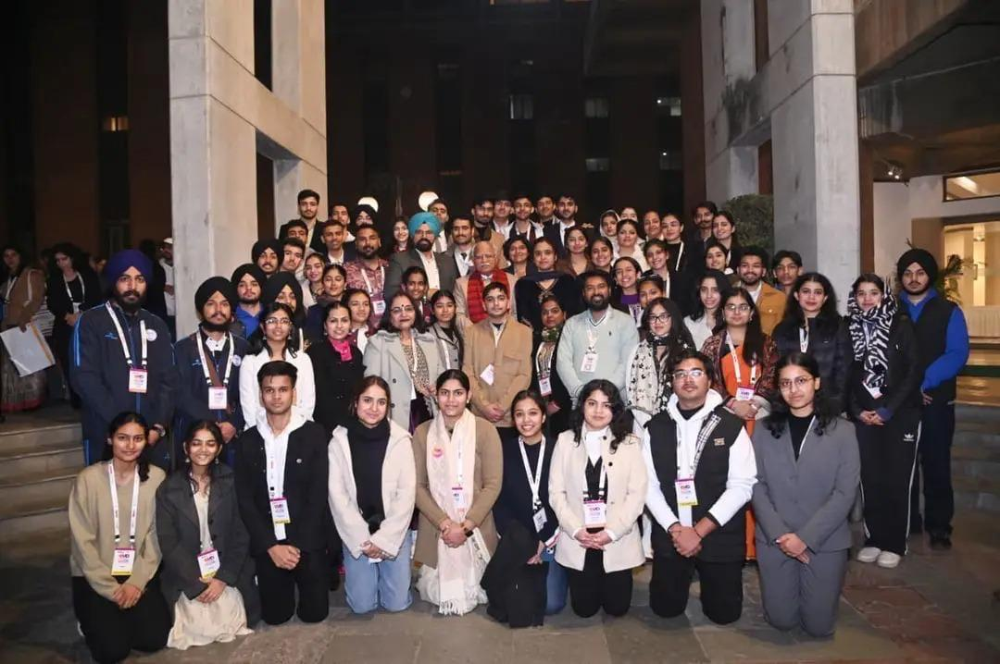
Closing Reflection
An experience I will carry with me
The Viksit Bharat Young Leaders Dialogue gave me much more than a platform. It gave me the experience of seeing what happens when young people from across India come together with ideas, seriousness and hope.
It was intellectually rich, emotionally energising and personally unforgettable. I left with new friendships, a stronger sense of purpose, and memories that I know I will carry for a long time.
Looking forward to doing something like this again someday.
Back to Initiatives →